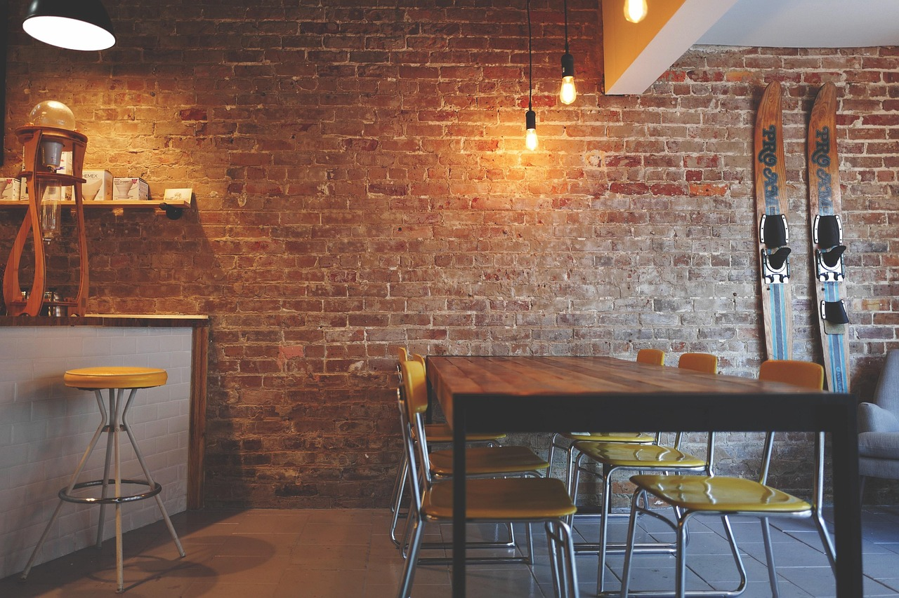
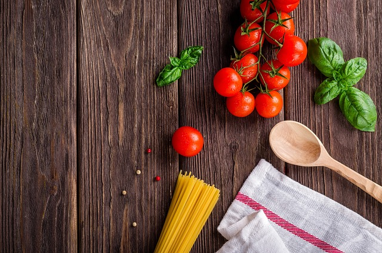
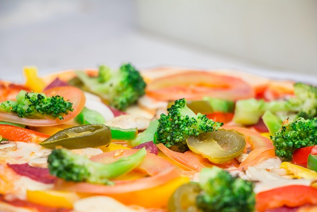
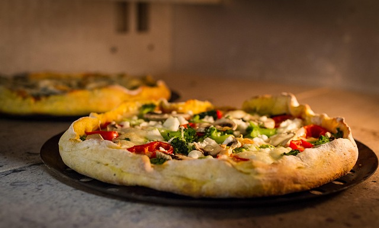
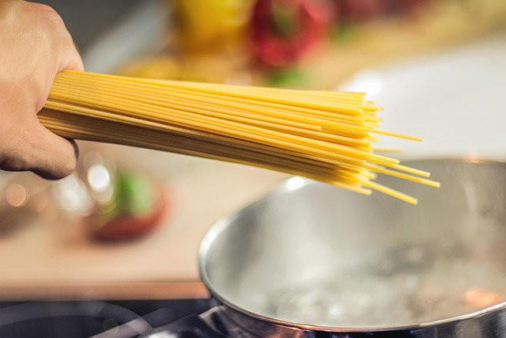

Una tavolasulla collina
Ristorante · La Spezia
Costa di Santa Lucia

Immagine illustrativa
Cucina italiana a La Spezia, a pranzo e a cena, da martedì a domenica. Un indirizzo per sedersi con calma.
Associazione sportiva dilettantistica, affiliata Endas
Si mangia, si resta, si chiacchiera
Strà Marinasco è un circolo con cucina, in Via Costa di Santa Lucia. Un luogo da vivere senza fretta, con amici e famiglia.
Il ritmo è quello di una tavolata, non di una corsa.


Cucina italiana, semplice
Il menu cambia da un tavolo all'altro, da una stagione all'altra. Per sapere cosa c'è oggi, la via più rapida è una telefonata.
- i.
Pranzo
Dal martedì alla domenica, dalle 11:30 alle 16:00.
- ii.
Cena
Dal martedì alla domenica, dalle 19:00 a mezzanotte.
- iii.
Prenotazione
Meglio telefonare, soprattutto nel fine settimana.

Immagini di cucina
Una selezione illustrativa, per dare l'idea di una cucina italiana. Non sono foto del locale.




Trovaci sulla Costa
Per prenotare o chiedere del menu, telefona. Ti risponderemo in sala.
- LunedìChiuso
- Martedì – Domenica11:30 – 16:00
- Martedì – Domenica19:00 – 24:00
- Indirizzo
- Via Costa di Santa Lucia 9, La Spezia
- Telefono
- +39 0187 01055
- circolostra.endas@virgilio.it